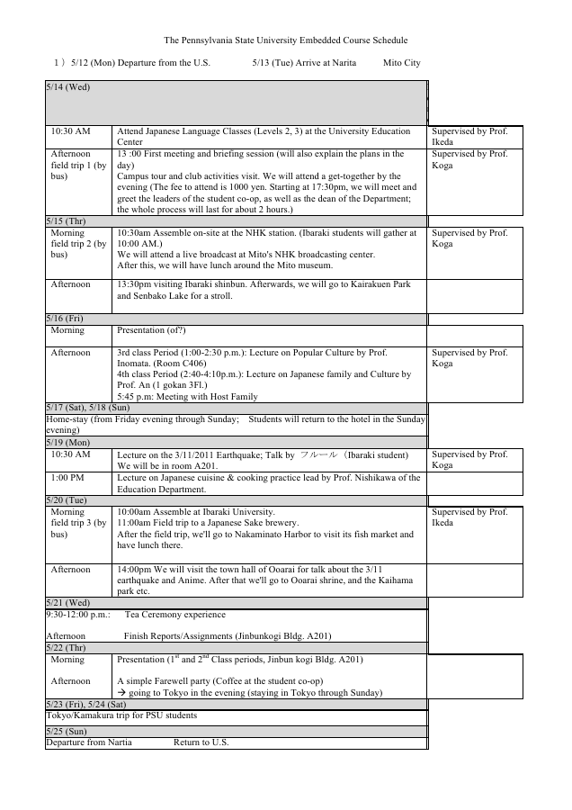
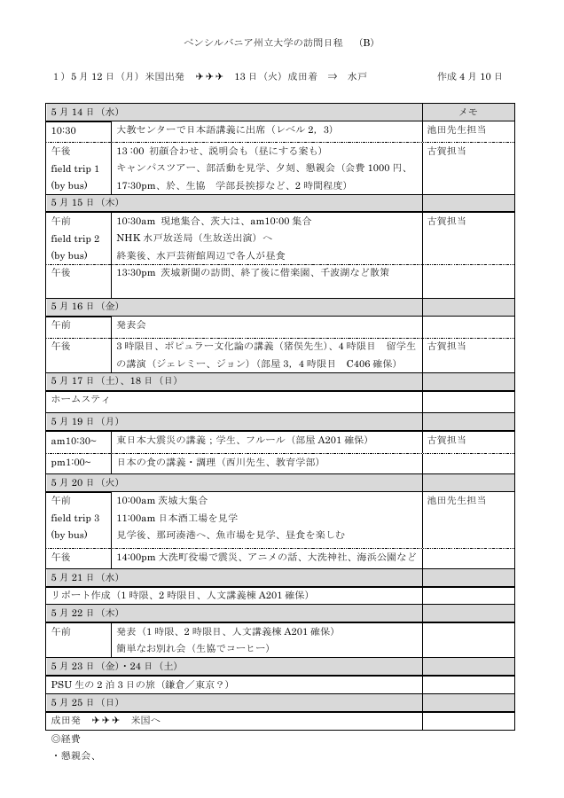

Embedded Course
JAPNS 496B: Global Experiences in Japan
Student hosted page available here.
General PSU Embedded Course Info
Insurance Info
Emergency Info
Staying Safe Abroad Info
Staying Healthy Abroad Info
Contacts:
Course Instructors traveling to Japan:
[email redacted]
Darwin Tsen, Graduate Student Assistant Penn State
Ibaraki University Coordinator:
KOGA Jun’ichirou, Professor Ibaraki University
Primary Grant Director in residence at Penn State University Park:
Jonathan E. Abel, Assistant Professor Penn State
Schedule (English)
Penn State In Japan
Ibaraki University, May 2014

Schedule (in Japanese)
